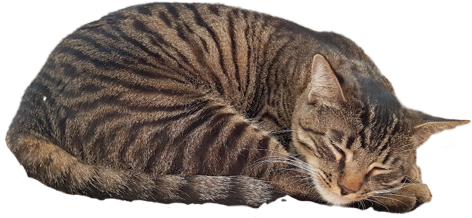

Development

Switching in SkeuOS
SkeuOS Tabby makes it easy to switch between Linux and SkeuOS.
Revive Obsolete devices with SkeuOS
Have an old Computer or Laptop? Don’t worry, it will become useful again with SkeuOS Tabby.
Long Dedicated Support
Tired of having to switch operating systems or upgrade because support ended for your device or operating system? Don’t worry SkeuOS Tabby has 11 years of dedicated support.

SkeuOS Tabby
Expected in End of 2025 - Early 2026
© 2025 Nashi. All Rights reserved.